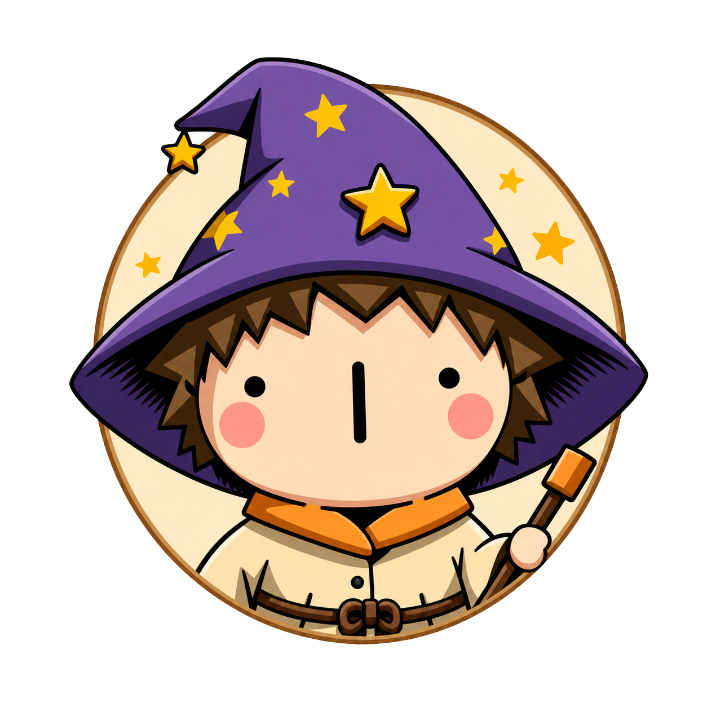
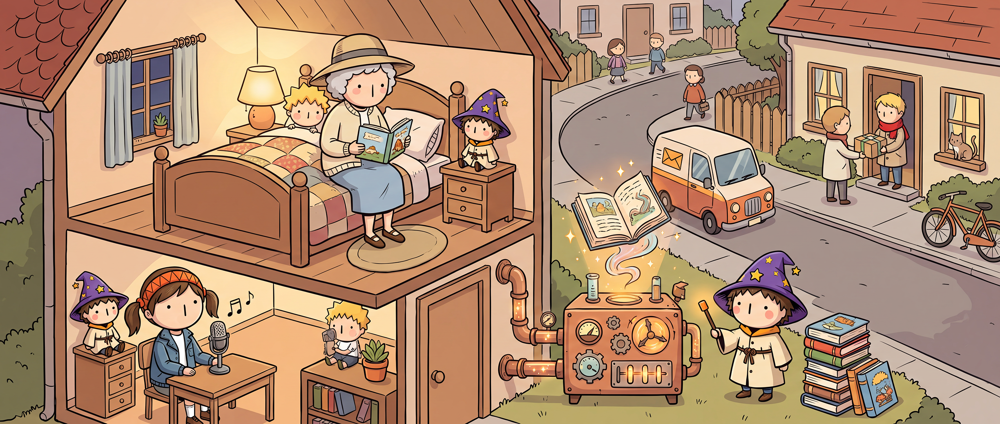
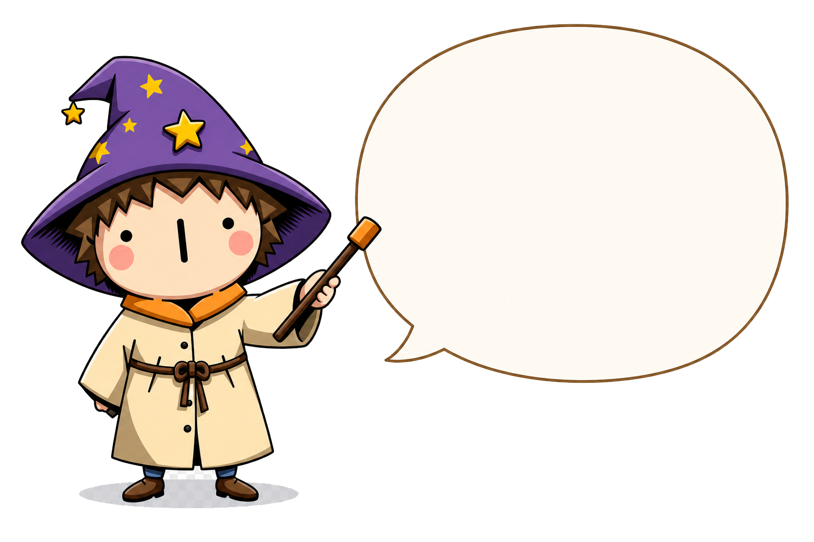
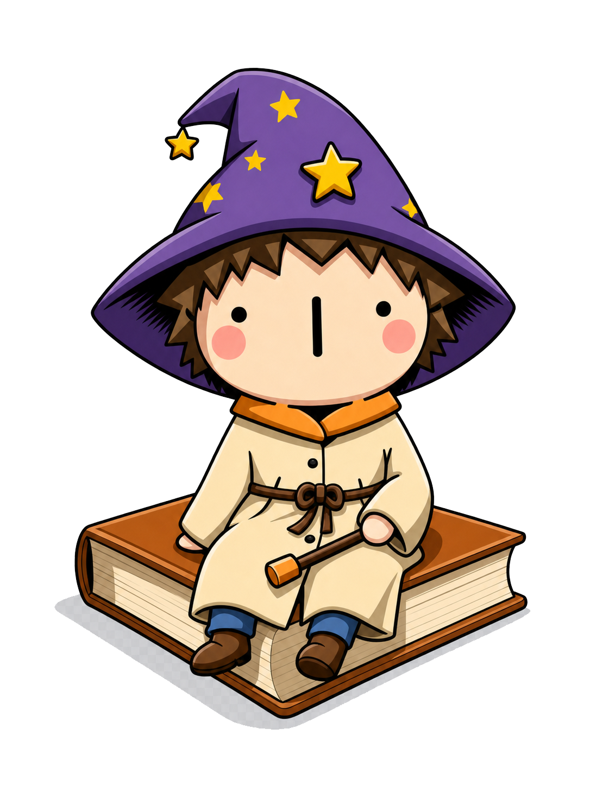

Wimmel Wizard™ Los!
Wimmelbilder aus eurem Leben
Finde die fünf Punkte im Bild
und erfahre wie es funktioniert.
jeder Punkt, den du gefunden hast, landet hier. rechts weiterlesen.
am Desktop siehst du das ganze Bild auf einmal – mobil wischt man sich durch. beides gut.
so läuft's ab, in fünf Schritten.

Hi, ich bin WizzelWim…
…ich bin ein Wimmel Wizard und zaubere aus euren Erzählungen wunderbare Wimmelbilder.
Das dauert länger als 3 Minuten.
Ehrlich. Ein Wimmelbild ist ein kleines Kunstwerk. Jeder Schritt kostet nur ein paar Minuten – aber es sind halt mehrere. Du kannst jederzeit aufhören und später weitermachen. Wir speichern automatisch, weil wir keine Monster sind.

entscheiden musst du erst, wenn du dein erstes Bild gesehen hast. wirklich.
1 Wimmelbild, DIN A2
2 Bilder + Charakterseite, 8 Seiten
5 Wimmelbilder, gebunden
★★★★★
hier kommen echte Zitate von echten Familien hin.
sobald die ersten Bücher angekommen sind.
wir erfinden keine.
Also. Erzähl.
kein Konto. kein Preis, bevor du weißt, was du kriegst.
Lieber verschenken? Gutschein →